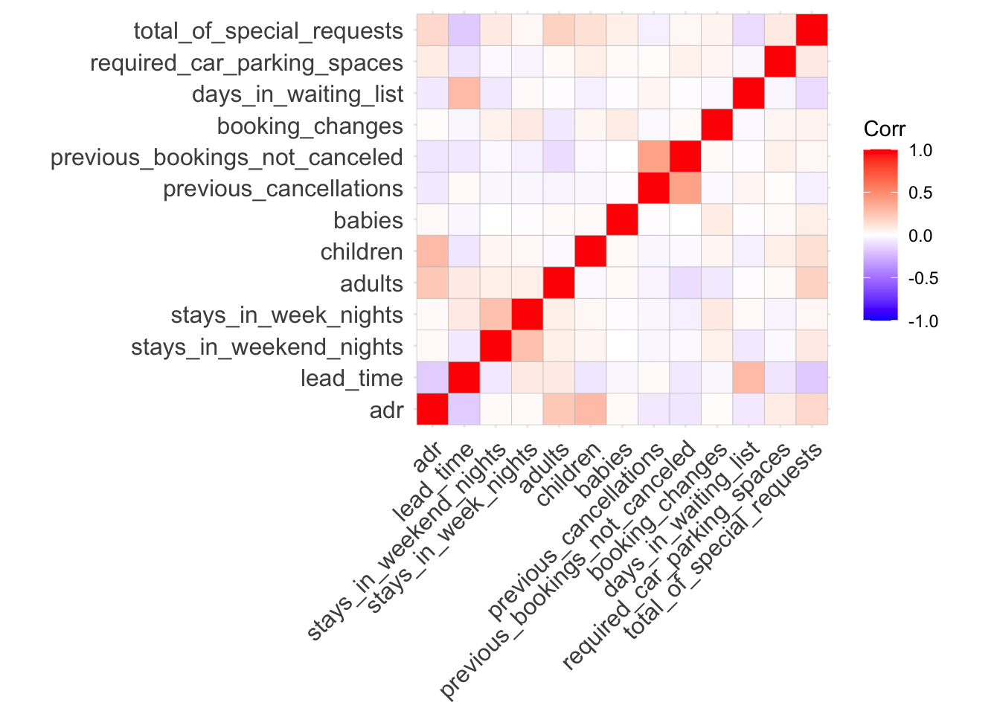

This is a R Markdown file for data wrangling and correlation plot for numeric variables in our dataset. For clarity, the file is separated from data_wrangling.Rmd.
library(tidyverse)
library(dplyr)
library(corrplot)## corrplot 0.84 loadedlibrary(ggcorrplot)Compared to the original dataset, the manipulated dataset only contains data for “City Hotel” as for hotel variable and “2016” for arrival_date_year variable. Group month by season. Delete variable “arrival_date_month”.
write.csv(hotel_whole_df,file="./data/manipulated_hotel_bookings.csv",row.names = F)Select only numeric variables. De-select arrival date information (year-week-day).
num_var_df<- hotel_whole_df %>%
select(-arrival_date_week_number,-arrival_date_year,-arrival_date_day_of_month) %>%
select(where(is.numeric)) %>%
relocate(adr,everything())cor_matrix<-round(cor(num_var_df),2)
cor_matrix %>% knitr::kable()| adr | lead_time | stays_in_weekend_nights | stays_in_week_nights | adults | children | babies | previous_cancellations | previous_bookings_not_canceled | booking_changes | days_in_waiting_list | required_car_parking_spaces | total_of_special_requests | |
|---|---|---|---|---|---|---|---|---|---|---|---|---|---|
| adr | 1.00 | -0.17 | 0.02 | 0.02 | 0.23 | 0.29 | 0.02 | -0.07 | -0.08 | 0.01 | -0.07 | 0.08 | 0.16 |
| lead_time | -0.17 | 1.00 | -0.07 | 0.09 | 0.09 | -0.08 | -0.03 | 0.02 | -0.07 | -0.03 | 0.29 | -0.09 | -0.18 |
| stays_in_weekend_nights | 0.02 | -0.07 | 1.00 | 0.26 | 0.07 | 0.04 | 0.00 | -0.03 | -0.02 | 0.06 | -0.07 | -0.02 | 0.09 |
| stays_in_week_nights | 0.02 | 0.09 | 0.26 | 1.00 | 0.07 | 0.03 | -0.01 | -0.03 | -0.05 | 0.09 | 0.02 | -0.04 | 0.03 |
| adults | 0.23 | 0.09 | 0.07 | 0.07 | 1.00 | -0.02 | 0.02 | -0.04 | -0.11 | -0.07 | -0.01 | 0.02 | 0.19 |
| children | 0.29 | -0.08 | 0.04 | 0.03 | -0.02 | 1.00 | 0.02 | -0.03 | -0.02 | 0.04 | -0.05 | 0.07 | 0.13 |
| babies | 0.02 | -0.03 | 0.00 | -0.01 | 0.02 | 0.02 | 1.00 | -0.01 | 0.00 | 0.08 | -0.01 | 0.02 | 0.07 |
| previous_cancellations | -0.07 | 0.02 | -0.03 | -0.03 | -0.04 | -0.03 | -0.01 | 1.00 | 0.40 | -0.02 | 0.04 | 0.01 | -0.05 |
| previous_bookings_not_canceled | -0.08 | -0.07 | -0.02 | -0.05 | -0.11 | -0.02 | 0.00 | 0.40 | 1.00 | 0.02 | -0.01 | 0.06 | 0.03 |
| booking_changes | 0.01 | -0.03 | 0.06 | 0.09 | -0.07 | 0.04 | 0.08 | -0.02 | 0.02 | 1.00 | -0.02 | 0.04 | 0.05 |
| days_in_waiting_list | -0.07 | 0.29 | -0.07 | 0.02 | -0.01 | -0.05 | -0.01 | 0.04 | -0.01 | -0.02 | 1.00 | -0.03 | -0.12 |
| required_car_parking_spaces | 0.08 | -0.09 | -0.02 | -0.04 | 0.02 | 0.07 | 0.02 | 0.01 | 0.06 | 0.04 | -0.03 | 1.00 | 0.09 |
| total_of_special_requests | 0.16 | -0.18 | 0.09 | 0.03 | 0.19 | 0.13 | 0.07 | -0.05 | 0.03 | 0.05 | -0.12 | 0.09 | 1.00 |
# flattenCorrMatrix <- function(cormat, pmat) {
# ut <- upper.tri(cormat)
# data.frame(
# row = rownames(cormat)[row(cormat)[ut]],
# column = rownames(cormat)[col(cormat)[ut]],
# cor =(cormat)[ut],
# p = pmat[ut]
# )
# }
# res2<-rcorr(as.matrix(num_var_df))
# flatten_corr_matrix<-flattenCorrMatrix(res2$r, res2$P)
# flatten_corr_matrix %>% knitr::kable()
cor_plot<-ggcorrplot(cor_matrix)
cor_plot
Find correlation between “is_canceled” and all other variables.
is_canceled_df <- num_var_df %>%
mutate(is_canceled=hotel_whole_df$is_canceled) %>%
relocate(is_canceled,everything())
c<-cor(is_canceled_df[-1],as.numeric(is_canceled_df$is_canceled)) %>%abs()
c<-c[order(c[,1],decreasing = T),]
c %>% knitr::kable()| x | |
|---|---|
| total_of_special_requests | 0.3417540 |
| lead_time | 0.3121291 |
| required_car_parking_spaces | 0.1478071 |
| booking_changes | 0.1342664 |
| days_in_waiting_list | 0.1054921 |
| previous_cancellations | 0.0779964 |
| stays_in_week_nights | 0.0688678 |
| previous_bookings_not_canceled | 0.0520608 |
| babies | 0.0285624 |
| stays_in_weekend_nights | 0.0234928 |
| adults | 0.0199720 |
| children | 0.0179260 |
| adr | 0.0160298 |